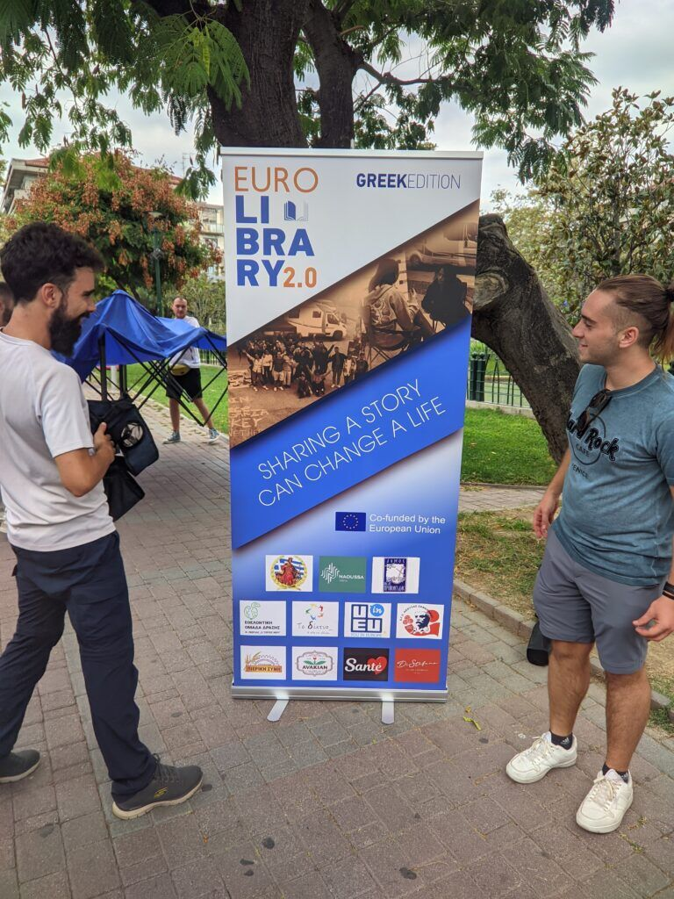
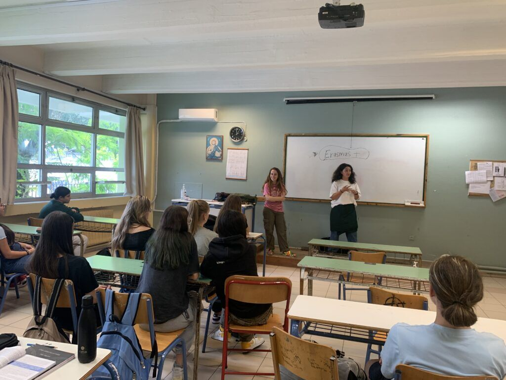
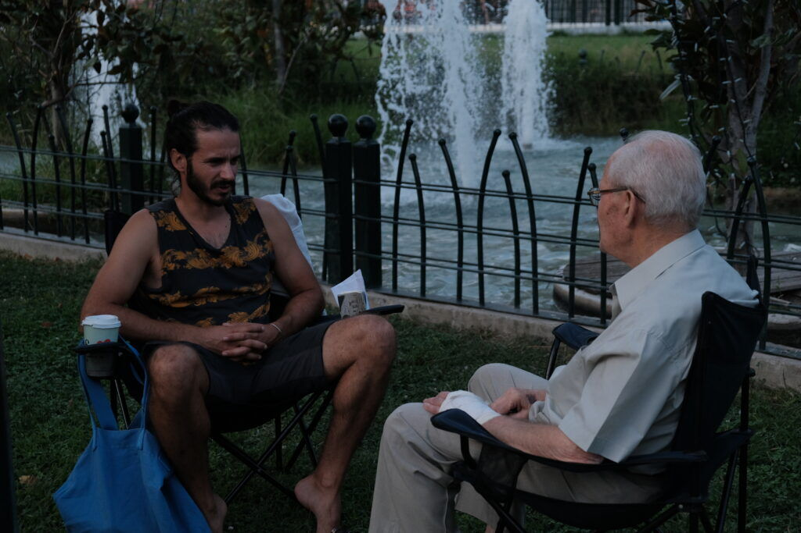

Plenty of Erasmus+ projects. None quite like this one.
Eurolibrary bridges cultural gaps by putting young people face to face with the communities they travel through. The result is more understanding, more empathy and lasting relationships, plus real tools to push back against discrimination and promote inclusion.

What the earlier editions delivered
Figures from the Spain edition in 2022 and the Greece edition in 2023.
How Eurolibrary evolved
Eurolibrary was born in 2021 from an Erasmus+ partnership between NGOs from Spain, Portugal, Bulgaria, the Netherlands and Greece.
We started with one question: how do we get young Europeans to engage with each other in a meaningful way? The answer grew into a platform for cultural exchange and community connection, with a real impact on participants' lives.


Our editions so far
- 2021Eurolibrary is founded through an Erasmus+ partnership of five NGOs.
- 2022First edition, in Spain, in October.
- 2023Second edition, in Greece, in October.
- 2025Five chapters in five countries, from June to November.
Five chapters, in numbers
Figures taken from the project reports. Digital figures are as reported in October 2025, six months after the Instagram account launched.
Behind the numbers: more than 75 posts and reels, including over 50 short videos, plus several hours of interviews and footage that fed our podcast and videos. Participants also left written feedback that points to high satisfaction and personal growth.
The project at a glance
Five NGOs, one living library
Eurolibrary is coordinated by Asociación Xeración and carried out together with four partner organisations.
- Coordinator
Asociación Xeración
Spain
Visit website - Partner
AltVenturers
Greece
Visit website - Partner
De Kracht van Sport
The Netherlands
Visit website - Partner
The Future Now Association
Bulgaria
Visit website - Partner
GAIA Alentejo
Portugal
Visit website
How the project connects with Erasmus+ priorities
Four ideas run through every chapter.
Inclusion and diversity
The Human Library gives a voice to marginalised and underrepresented young people, and brings together participants from five countries.
Green mobility
Train, feet, bikes, ferries and a shared campervan. How we travelled was part of the message.
Civic engagement
Public events in local communities and schools, where young people start conversations that challenge prejudice.
Digital storytelling
More than 150 videos, podcasts and reels carried the stories beyond the places we visited.
See the five chapters
Five countries, five topics and five ways to move. Pick a chapter and follow the route.
Explore the chapters